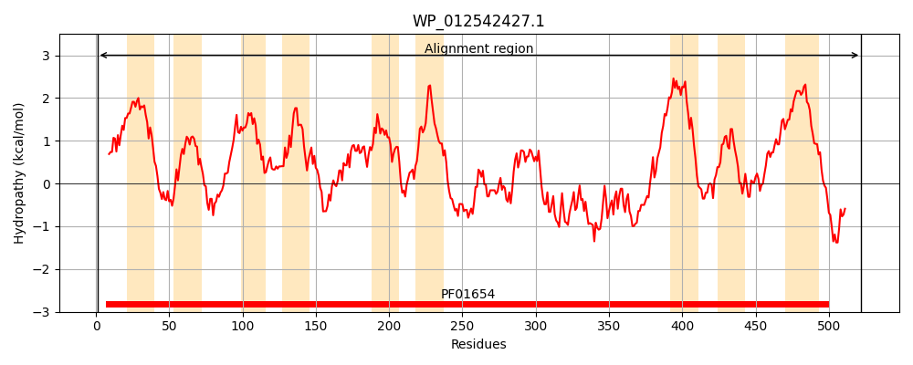
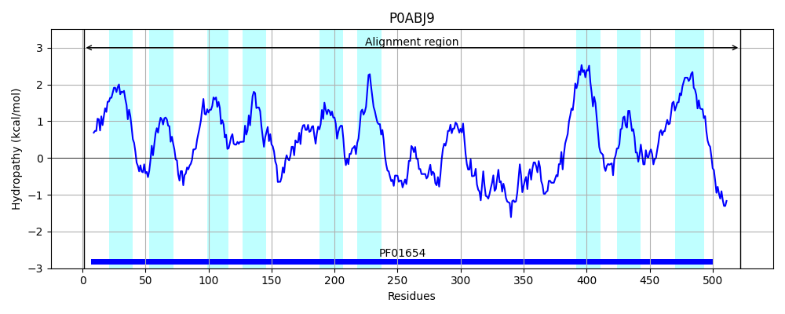

Hit Accession: P0ABJ9
Hit TCID: 3.D.4.3.2
Hit Description: gnl|BL_ORD_ID|8710 gnl|TC-DB|P0ABJ9|3.D.4.3.2 Cytochrome d ubiquinol oxidase subunit 1 OS=Escherichia coli (strain K12) GN=cydA PE=1 SV=1
Mach Len: 522
e:0.000000
Query TMS Count : 9
Hit TMS Count: 9
TMS-Overlap Score: 9.100000
Predicted Substrates:None
BLAST Alignment:
Score: 2536 , Bit scores: 981 bits, E-value: 0.0e+00, Alignment length: 522, Percentage identity: 94
Query: 1 MLDIVELSRLQFALTAMYHFLFVPLTLGMAFLLAIMETVYVLSGKQIYKDMTKFWGKLFGINFALGVATGLTMEFQFGTNWSYYSHYVGDIFGAPLAIEGLMAFFLESTFVGLFFFGWDRLGKVQHMAVTWLVALGSNLSALWILVANGWMQNPIASDFNFETMRMEMVSFSELVLNPVAQVKFVHTVASGYVTGAMFILAISSWYMLKGRDFAFAKRSFAIAASFGMAAILSVIVLGDESGYEMGDVQKTKLAAIEAEWETQPAPAAFTLFGIPDQNAQTNHFAIQIPYALGIIATRSVDKPVIGLKDLMVQHEERIRNGMKAYALLEQLRAGSTDQAVRDQFNSVKKDLGYGLLLKRYTPNVADATEEQIAKATKDSIPSVAPLYFAFRIMVACGILMLLIIGASFWSVIRNRIGEKKWLLRAAFFGLPLPWIAVESGWFVAEYGRQPWAIGEVLPTAVANSSLTAGDLIFSMLLICGLYTLFLVAELFLMFKFARKGPSSLKTGRYHFEQSSAAIQSAR 522
MLDIVELSRLQFALTAMYHFLFVPLTLGMAFLLAIMETVYVLSGKQIYKDMTKFWGKLFGINFALGVATGLTMEFQFGTNWSYYSHYVGDIFGAPLAIEGLMAFFLESTFVGLFFFGWDRLGKVQHM VTWLVALGSNLSALWILVANGWMQNPIASDFNFETMRMEMVSFSELVLNPVAQVKFVHTVASGYVTGAMFIL IS+WYMLKGRDFAFAKRSFAIAASFGMAA+LSVIVLGDESGYEMGDVQKTKLAAIEAEWETQPAPAAFTLFGIPDQ +TN FAIQIPYALGIIATRSVD PVIGLK+LMVQHEERIRNGMKAY+LLEQLR+GSTDQAVRDQFNS+KKDLGYGLLLKRYTPNVADATE QI +ATKDSIP VAPLYFAFRIMVACG L+L II SFWSVIRNRIGEKKWLLRAA +G+PLPWIAVE+GWFVAEYGRQPWAIGEVLPTAVANSSLTAGDLIFSM+LICGLYTLFLVAELFLMFKFAR GPSSLKTGRYHFEQSS Q AR
Sbjct: 1 MLDIVELSRLQFALTAMYHFLFVPLTLGMAFLLAIMETVYVLSGKQIYKDMTKFWGKLFGINFALGVATGLTMEFQFGTNWSYYSHYVGDIFGAPLAIEGLMAFFLESTFVGLFFFGWDRLGKVQHMCVTWLVALGSNLSALWILVANGWMQNPIASDFNFETMRMEMVSFSELVLNPVAQVKFVHTVASGYVTGAMFILGISAWYMLKGRDFAFAKRSFAIAASFGMAAVLSVIVLGDESGYEMGDVQKTKLAAIEAEWETQPAPAAFTLFGIPDQEEETNKFAIQIPYALGIIATRSVDTPVIGLKELMVQHEERIRNGMKAYSLLEQLRSGSTDQAVRDQFNSMKKDLGYGLLLKRYTPNVADATEAQIQQATKDSIPRVAPLYFAFRIMVACGFLLLAIIALSFWSVIRNRIGEKKWLLRAALYGIPLPWIAVEAGWFVAEYGRQPWAIGEVLPTAVANSSLTAGDLIFSMVLICGLYTLFLVAELFLMFKFARLGPSSLKTGRYHFEQSSTTTQPAR 522 | Protein Hydropathy Plots: |
|---|
|  |  |
Pairwise Alignment-Hydropathy Plot:
|
|---|
 |